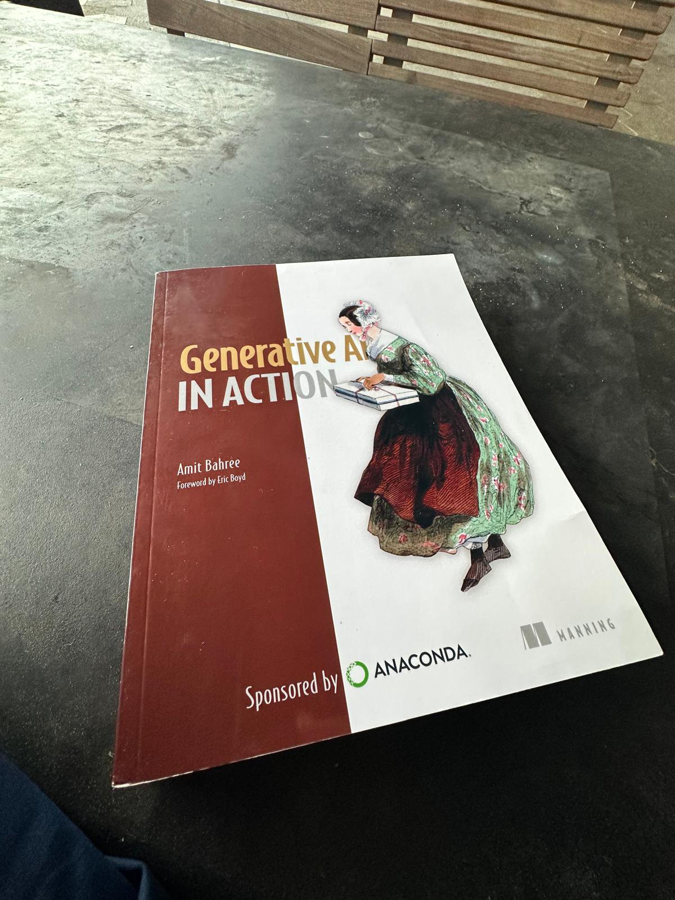

A raffle at PyData Boston
Last December I was at PyData Boston, where I gave a talk called When Rivers Speak: Analyzing Massive Water Quality Datasets using USGS API and Remote SSH in Positron. Between sessions I was doing the thing you do between talks: wandering the sponsor tables, half looking for stickers, half looking for conversations. The Anaconda booth had both. Dawn Wages, Daina Bouquin, and Jessica Stefanowicz were running it, and it was one of those booths where you stop for thirty seconds and stay for twenty minutes. We talked about Python packaging, community, and the strange moment the data ecosystem is living through. I dropped my name in their raffle mostly as a formality.
I won a copy of Generative AI in Action by Amit Bahree.

I want to be honest about my expectations. Conference raffle books have a certain reputation. They go on the shelf, they collect intentions, they wait. This one did not wait long, and it turned out to be one of the most useful technical books I have read in the past few years. Not because it taught me an API, but because it quietly replaced the mental model I was using for AI products.
This is also a small argument for going to conferences at all. The talks are recorded. The conversations are not. A raffle ticket handed over by a booth team that clearly cares about its community turned into months of thinking. That exchange rate is hard to beat.
This was not really a book about prompts
The book covers prompts, of course. There is a full chapter on prompt engineering (ch. 6, pp. 155-182), with system messages, zero-shot and few-shot patterns, chain of thought, and advice about clear syntax. It is good material, and the interactive widgets below borrow from it.
But treating this as a prompt book would be like treating a civil engineering textbook as a book about bricks. The prompt is the visible artifact. The book is about everything around it: the model choices, the retrieval pipelines, the orchestration layer that decides what actually reaches the model, the filters on the way out, the evaluation harness that tells you whether any of it works, and the operational machinery that keeps it working at scale.
Bahree structures the book in three movements. Foundations first (part 1, chs. 1-5, pp. 3-152): what these models are, how tokens and embeddings and context windows behave, and what the configuration knobs actually do. Then techniques (part 2, chs. 6-9, pp. 155-280): prompt engineering, retrieval-augmented generation, chatting with your own data, fine-tuning. Then the part that most books skip and most teams need (part 3, chs. 10-13, pp. 283-422): application architecture, production deployment, evaluations, and responsible AI.
That third movement is where the book earns its title. "In action" turns out to mean "in production, with users, under constraints."
Thinking like a product builder
I work on developer tools. My daily questions are about workflows, adoption, and trust: will a data scientist trust this output, will this fit how people already work, what happens when it fails. Reading this book, I kept noticing that the same questions govern AI products, just wearing different clothes.
A few shifts stuck with me.
Model configuration is a product surface, not a tuning detail. Temperature, top_p, penalties, and max tokens read like implementation trivia until you realize they encode a product decision: how much unpredictability are you willing to ship? The book is refreshingly practical here (temperature in section 3.2.4, top_p in 3.2.5, the penalties in 3.3.3, pp. 71-81), down to advice like adjusting temperature or top_p but not both (p. 75). A support bot and a brainstorming tool might use the same model and be entirely different products because of these numbers.
Retrieval is a trust architecture. The RAG chapters (chs. 7-8, pp. 183-241) frame retrieval not as a clever trick but as the mechanism that lets a general model answer from your data, with provenance. Once you see grounding as the thing that turns "plausible" into "verifiable," a lot of product decisions clarify. Chunking strategy (a topic the book gives eighteen full pages, pp. 195-212), embedding choice, and vector search stop being infrastructure minutiae and become the difference between an answer a user can check and an answer a user has to believe.
Adaptation has a cost gradient. The book is careful about fine-tuning (ch. 9, pp. 242-282, with When to fine-tune an LLM on pp. 247-248): when it helps, what it costs, and how often prompting or retrieval solves the problem more cheaply. That ordering, prompt first, ground next, fine-tune last, is really a resource allocation argument, the kind product managers make about any feature.
Operations are the part users actually feel. The production chapter (ch. 11, pp. 321-356) talks about latency budgets, time to first token (table 11.3, p. 327), quotas and rate limits (pp. 333-336), and the pay-as-you-go economics of tokens (p. 333). It even closes with a production deployment checklist (pp. 354-356). None of this is glamorous. All of it decides whether users experience your product as instant and reliable or as a spinner with occasional poetry.
Evaluation is testing with a different accent. BLEU, ROUGE, and BERTScore on one side (pp. 359-363); LLM-based approaches like G-Eval (pp. 366-368) and broad benchmarks like HELM (p. 372) on the other. What struck me is how familiar the underlying discipline is. You define what good means, you measure it continuously, you distrust single numbers. I have spent years arguing for thoughtful testing in software. Evaluations are the same argument relocated.
The chapter that changed my perspective
Chapter 10, on application architecture (pp. 283-320), is the one I keep returning to.
It opens with two framings, both on p. 285: Karpathy's "Software 2.0," where learned behavior replaces handwritten logic, and the copilot pattern, which the book credits to Microsoft and explains with an airplane analogy: the AI takes on the cognitive drudgery, and the human remains the pilot (p. 286). Then it does something genuinely useful: it lays out a GenAI application stack, layer by layer (pp. 286-292), with a comparison the book reaches for itself: this is the LAMP stack of GenAI applications (p. 286). Infrastructure at the bottom, foundation models above it, then an orchestration layer that handles grounding, response filtering, and plugin execution, and finally the application the user actually touches.
Why did this change my perspective? Because it made AI legible as software infrastructure. Before reading it, I mentally filed most AI products as "a model with a UI." Afterward, I could not unsee the middle: the orchestration layer (pp. 293-307) is where the interesting engineering and most of the product risk lives. It decides what context the model sees, what tools it may call, and what is allowed out. It is also, not coincidentally, where trust is implemented.
The evaluations chapter is a close second, for a personal reason. Later this month, at PyOhio 2026 in Cleveland, I will be giving a talk called In Defense of Thoughtful Testing: Rethinking Quality in the Age of AI-Generated Code, and the book's treatment of evals reads like the missing appendix to the argument I have been building. If generation is cheap, judgment becomes the scarce resource. Evals are how you industrialize judgment.
Things I immediately wanted to experiment with
I think best by building, and I write and prototype in marimo notebooks these days, so the book turned into a to-do list. Notebooks are also an argument I keep making on stage: this past March at PyCascades I gave To Notebook or Not to Notebook: Multilingual Workflows for Exploratory Data Analysis, and this month I am presenting a virtual poster at SciPy 2026, 25 Years of Interactive Scientific Computing: From IPython and Jupyter to Open Source IDE-Native Notebooks.
The first thing I built is the set of interactive explainers embedded in this post: a model configuration playground where every knob visibly rewrites a simulated completion, a prompt pattern explorer, a clickable version of the application stack, a token economics calculator for enterprise rollouts, a fine-tuning decision helper, and a responsible AI checklist. None of them call a model. That is deliberate. The concepts are about distributions, structures, and tradeoffs, and you can teach those with careful simulation, reproducibly, in the browser.
There is something fitting about using a reactive notebook for this. The book's deepest theme is that AI systems are systems, with dependencies and dataflow and failure modes. A notebook where every cell declares its dependencies and updates deterministically is a small, honest model of the discipline the book asks for at production scale. Reproducibility is not a garnish here. It is the point.
It also left me with product questions I am still chewing on for the notebook and IDE world I used to work in. What does grounding look like inside an exploratory data analysis session? Where does an evaluation harness live when the "application" is a scientist's notebook? Which layer of the stack should a tool like a data science IDE own, and which should it merely observe?
Why I would recommend it
Not because it will teach you the latest API. Books cannot win that race, and this one knows it. Model names age; the chapters on architecture, evaluation, deployment, and risk do not.
I would recommend it because it helps people think clearly about AI systems, and that skill is scarcer right now than either compute or enthusiasm. Developers will get a map of the whole stack instead of a pile of snippets. Product managers will get the vocabulary to interrogate architecture decisions instead of accepting them. Developer advocates will find honest framings that do not oversell. Data scientists will find the bridge between experimentation and production that their organizations keep asking them to cross.
A word about the companion repository, because it is the part I keep going back to. The book takes it seriously enough to give it its own appendix (appendix A, p. 423). The code is organized by chapter and named by listing, so Listing 11.1 in the book is Listing-11.1-measuring_paygo_latency.py on disk, ready to run. The production chapter is the standout: scripts that measure pay-as-you-go versus provisioned-throughput latency, a Redis caching example, and observability wiring with MLflow. The evaluations chapter ships runnable LLM-based evals using deepeval. Around the code there is a curated research reading list organized by chapter, a small Streamlit app that ties chat, chat-with-your-PDF, and image generation into one local reference application, and the touches that signal care: an MIT license, committed conda environment files, and a CITATION.cff so the repo itself is citable. Books date; a repo like this is how a book stays useful.
The book treats generative AI as infrastructure with tradeoffs rather than magic with a rate card, and that stance is worth the cover price on its own. Or, in my case, worth one extremely lucky raffle ticket.
Thank you, Amit Bahree, for writing a book that respects both the technology and the reader. And thank you Dawn Wages, Daina Bouquin, and Jessica Stefanowicz, and the Anaconda crew at PyData Boston, for the conversation, the community, and the ticket. Conferences are made of talks, but they are remembered for exchanges like that one.
What should I read next?
This is where you come in. I am collecting recommendations for the best AI books people have actually read: the one that changed how you build, the one you keep lending out, the one everyone praises but you found overrated. Write to me with the title and one sentence on why, and I will pick the next review from the pile.